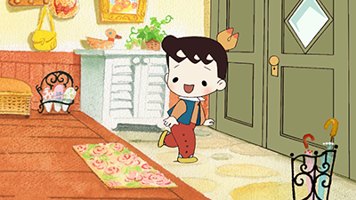
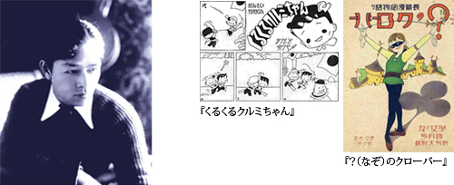
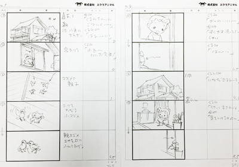
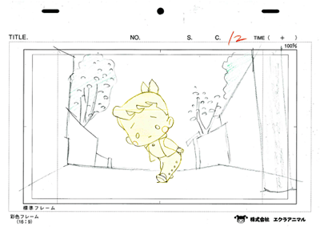

”カワイイ”の元祖、作家 松本かつぢ をより多くの方に知ってもらいたい！そんな想いから、氏の代表作品『くるくるクルミちゃん』のパイロットアニメーションを含めた10分間のプロモーション映像作品を制作・完成しました。
制作 株式会社エクラアニマル
コンテ・演出：本多 敏行
プロデューサー：豊永 ひとみ／音楽：中川 孝
協力：くるみフレンズプロジェクト
くるみちゃん：福原 美波／お母さん：柳沢 三千代

(1904年-1986年)
昭和の時代に抒情画家、漫画家、童画家、そしてグッズクリエイターとして多才な才能を発揮した昭和を代表するアーティストです。
少女雑誌文化が花開き、抒情画家たちが絢爛豪華に筆を競い合った昭和のはじめ、松本かつぢは、高畠華宵や蕗谷虹児に続く新世代の画家として頭角をあらわしエキゾチックで華麗な画風で中原淳一と人気を二分しました。
一方で、明るく可愛いらしいユーモアタッチの挿絵を描き、コミカルな漫画にも挑戦して対照的な画風を自在に操り、既存の画家にはないマルチな画才を示しました。連載漫画「くるくるクルミちゃん」は少女漫画の先駆け的作品であるとともに、次々と商品化されて日本のキャラクターグッズの元祖になりました。
また、戦前からディズニーアニメに関心を寄せ自らの作品に取り入れ、昭和 30~40年代にはベビーグッズの企画制作や、絵本の仕事も手がけるなどしました。日本の叙情画、漫画、童画、キャラクターグッズなど、“昭和のかわいいもの文化”の歴史をさかのぼると、実はKawaiiの元祖は、松本かつぢに辿り着くと言っても過言ではありません。
アニメーションの製作費を集うため、アートクラウドファンディングFUNDIYにて、クラウドファンディングに参加していました。
▶クルミちゃんのファンディングページを見る

↑『くるくるクルミちゃん』絵コンテ

↑『くるくるクルミちゃん』レイアウト・原画